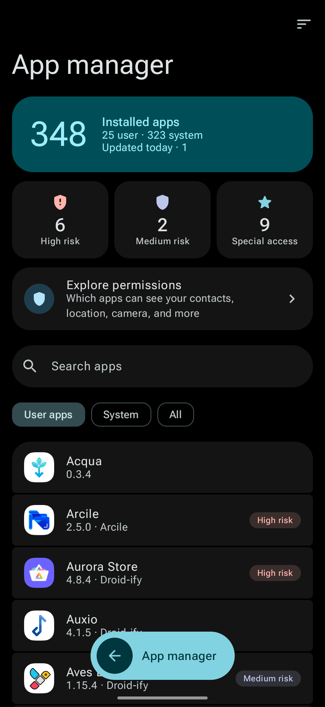
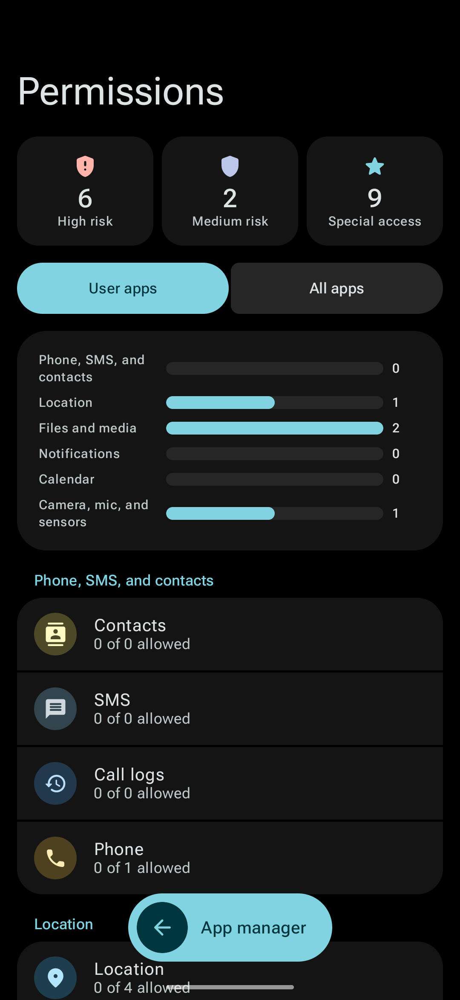
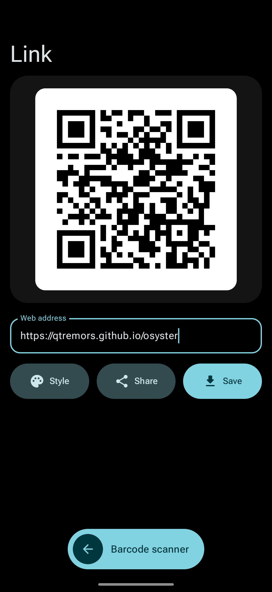
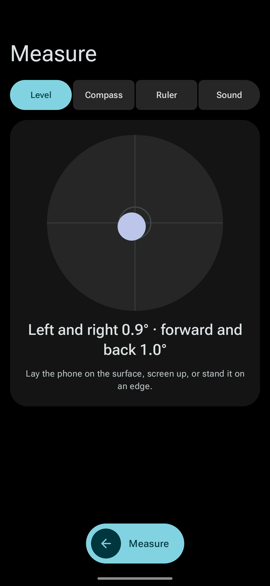

The tools your phone should have come with.
Osyster shows what your Android phone is made of and adds the small tools it leaves out. Free, open source, and fully offline.
- – stars
- – forks
- – downloads
- – on the latest version
Android 8.0 or newer · No root needed
What's inside
Everything here works offline, on your phone.
Notification history
Every notification in full, even ones you swiped away or the app deleted. Off until you turn it on.
Battery history
Your battery over the last month: each charge, how fast it drains, and how warm it gets.
App manager
See what each app is allowed to use, like your camera, microphone, or location, and how risky that is.
Barcode scanner
Read QR codes and barcodes from the camera or a picture, and make your own.
Bluetooth remote
Use your phone as a remote, mouse, or keyboard for a TV or computer. Nothing to install on it.
Measure
A bubble level, compass, ruler, and sound meter, using the phone's own sensors.
Data and screen time
How much data and time each app uses, by day, week, or month.
Your phone
Twelve pages on the processor, memory, battery, screen, cameras, sensors, and more, in plain words.
Home screen
Widgets for battery, data, and music, plus Quick Settings tiles and icon shortcuts.
Also: stay awake, flashlight brightness and blink, app stopper, a screen test, and a launcher for hidden app screens.
Screens
- Home
- Tools

App manager
Permissions
Code creator
Measure
Nothing leaves your phone.
- No internet permissionAndroid itself keeps Osyster offline.
- No ads, accounts, or trackingNothing is collected, so there is nothing to sell.
- No phone number or IMEIOsyster never reads anything that could identify you.
Go further if you want
Extra tools can change settings Android keeps hidden, like what battery saver turns off or how fast animations run. They are optional.
- InstallAlmost everything works right away.
- Run one commandFrom a computer, once, to unlock the settings tools.
- Add Shizuku or rootFor freezing apps and stopping them in one tap.
Developer

Tremors
Makes private, offline Android apps. Osyster is a solo project.
Credits
Built with Kotlin, Jetpack Compose, Material 3, Hilt, MaterialKolor, the Shizuku API, and ZXing, with text in Roboto Flex.
The look is inspired by Essentials by sameerasw. The Bluetooth remote and barcode scanner build on BT Remote and Barcode Scanner by Atharok. The round music widget follows Metro and Retro Music Player.
Site icons from Lucide and Simple Icons. Every license is in the app under Settings, About, Open source licenses.

Get Osyster
Download APKAndroid 8.0 or newer.